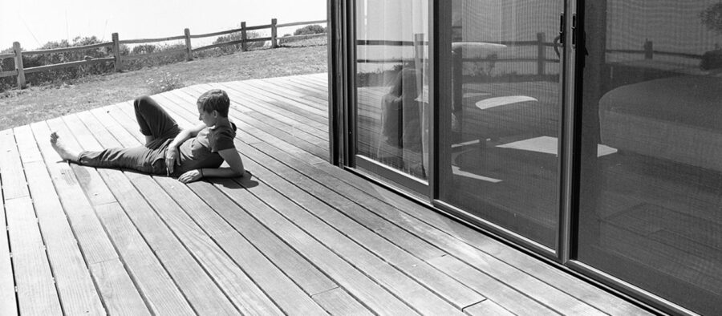

Living with Modernism: Kelli Connell’s Pictures for Charis and Double Life
Photographer Kelli Connell explores the psyche of human relationships and our connection to nature and architecture in this two-part exhibition. The title of the exhibition reflects the artist’s commitment to spending time with the people and places she photographs. Together, the exhibitions mark the largest presentation of Connell’s work in Chicago and encourage dialogue about queerness, power structures, shifting ecologies, and complex relationships in the twenty-first century.
The main galleries will feature a tender and emotional sequence of work placing the contemporary artist in dialogue with one of the most innovative American photographers of the 20th Century, Edward Weston. Accompanied by 48 original prints by Weston, Connell presents her 45 photographs in the series Pictures for Charis, along with text excerpts by writer Charis Wilson, Weston’s partner of 11 years. For this body of work, Connell revisited the sites of Weston’s iconic black-and-white landscapes and portraits of Charis in California and the West (1934-45) to photograph her longtime partner, artist Betsy Odom. The installation bridges eighty years of ecological and social shifts with a feminist perspective.
The McCormick House gallery presents the latest chapter in Kelli Connell’s ongoing series Double Life. In Double Life, which the artist began in 2002, Connell explores long-term relationships with others and the self. The digital images document the fictional relationship of two women, both played by collaborator Kiba Jacobson. Connell describes the series as “an honest representation of the fluidity of the self in regards to decisions about intimate relationships, sexuality, gender, family, belief systems and lifestyle options.” EAM commissioned the photographer to respond to the architecture of the house by modernist architect, Ludwig Mies van der Rohe for this exhibition. Connell chose to incorporate the site – and inspiration from the poetry from its former owner Isabella Gardner (niece of the Boston aristocrat by the same name) – to generate new works adding to the perpetual Double Life narrative.
About the Artist
Kelli Connell (B. Oklahoma, 1974) is a photographer based in Chicago. Through her images, she addresses issues of sexuality, identity and self-perception. Her work is in the collections of the Metropolitan Museum of Art, Los Angeles County Museum of Art, J Paul Getty Museum, Philadelphia Museum of Art, Museum of Fine Arts Houston, Dallas Museum of Art, and the Museum of Contemporary Photography, among others. Publications include Kelli Connell: Pictures for Charis (Aperture and Center for Creative Photography, March 2024), PhotoWork: Forty Photographers on Process and Practice (Aperture), Photo Art: The New World of Photography (Aperture), and the monograph Kelli Connell: Double Life (DECODE Books). Connell has received fellowships and residencies from The Guggenheim Foundation, MacDowell, PLAYA, Peaked Hill Trust, LATITUDE, Light Work and The Center for Creative Photography.